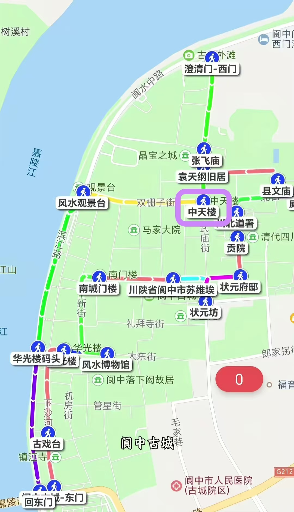
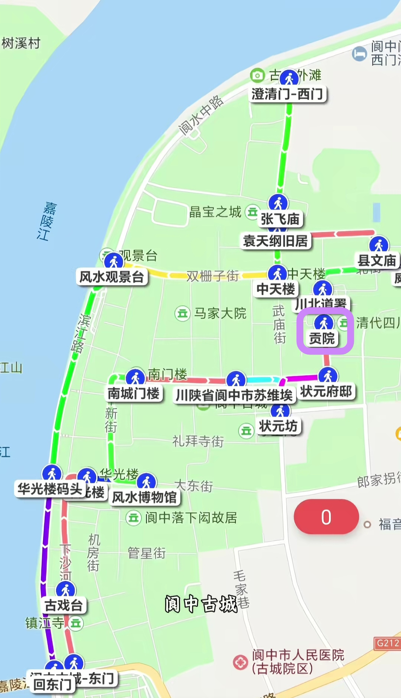
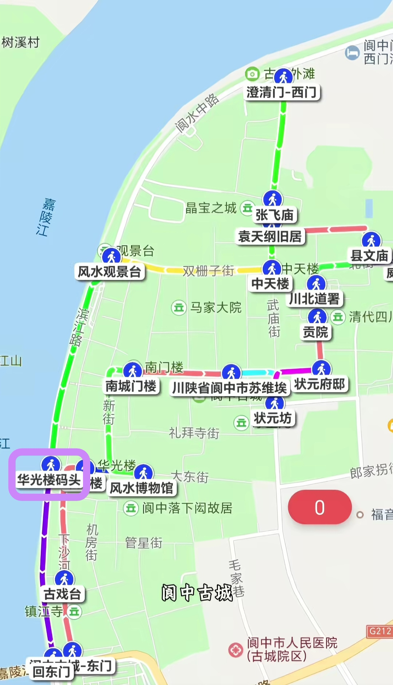
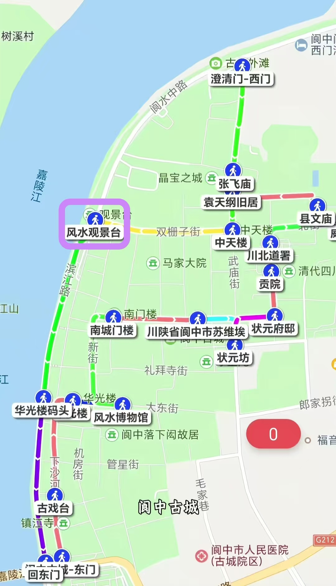

按顺序打卡 5 个点位，从古城中心走到江岸名山，一条线读懂阆中风水格局
古城东西南北四条大街在此交汇，是阆中古城的中心地标。登楼可俯瞰棋盘式街巷格局，由此开启寻宝之旅。

清代科举考试的贡院，是全国保存较为完好的古代贡院之一。穿行号舍之间，体验一段科举文化。

为纪念三国名将张飞而建，张飞曾镇守阆中七年。祠内塑像、碑刻、墓冢俱全，是三国文化的重地。
古城南门城楼，临江而立，有“阆苑第一楼”之称。登楼远眺，嘉陵江与古城尽收眼底。

千年嘉陵江绕古城而过，江水清澈，两岸青山对峙，是阆中风水格局的灵魂所在。沿江漫步，看古城倒影，为寻宝之旅画上浪漫句号。
